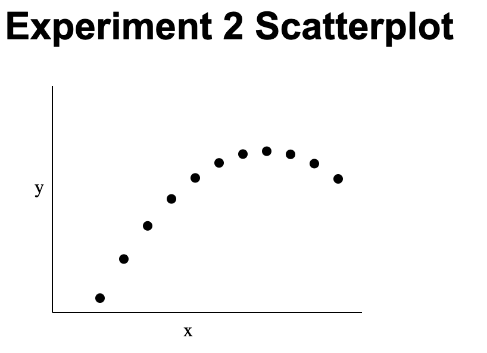
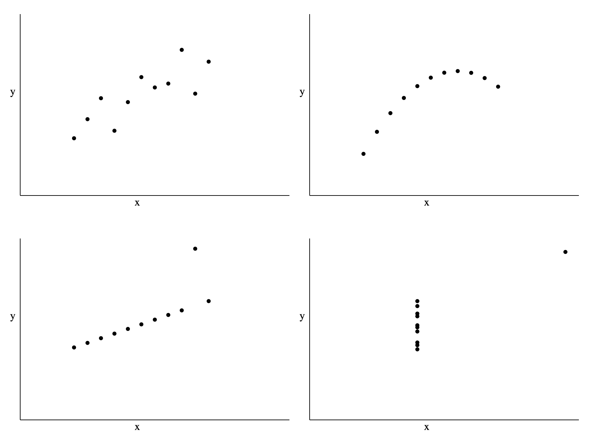
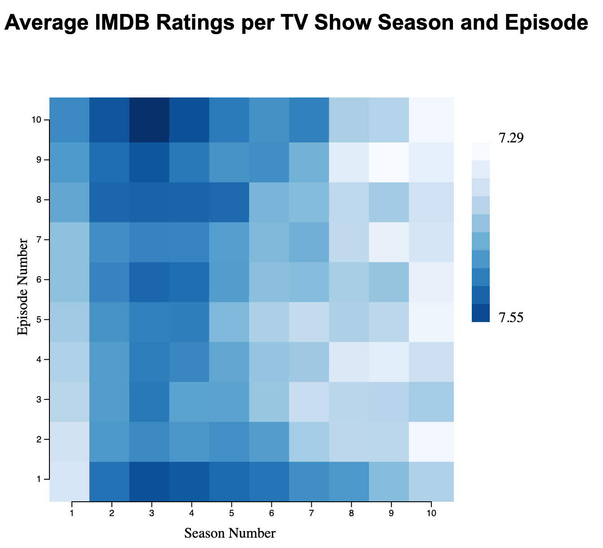
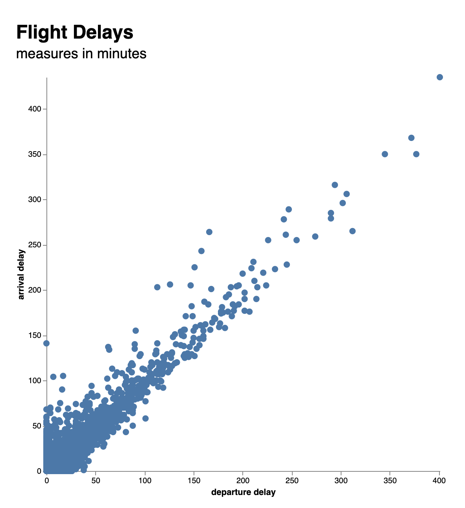
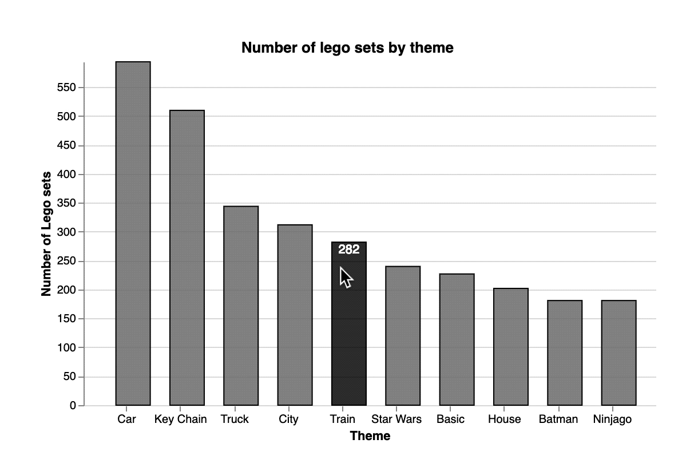

Assignments
Assignment 1
Due date: August 25, 2022 1:59pm
Assignment 2
Due date: September 1, 2022 11:59pm
- Create an html file with a basic DOM structure
- Plot the 11 points from experiment 2 in Anscombe’s quartet data in svg
- Add labels and axes (required) and anything else you might want to (in other words, you are welcome to customize your plot to try different HTML/CSS/SVG elements)
- Your code must pass the validation at https://validator.w3.org/
Points to plot:
| x | y |
|---|---|
| 10 | 9.14 |
| 8 | 8.14 |
| 13 | 8.74 |
| 9 | 8.77 |
| 11 | 9.26 |
| 14 | 8.1 |
| 6 | 6.13 |
| 4 | 3.1 |
| 12 | 9.13 |
| 7 | 7.26 |
| 5 | 4.74 |
Here’s an example of the simplest solution for this challenge:

You can read Murray Chapter 3 SVG for more help on how to solve this assignment.
Assignment 3
Due date: September 13, 2022 11:59pm
- Download html and js files
- Modify
assignment_03.jsto plot four scatterplot in four different svg elements, one for each anscombe set (data is in theassignment_03.jsfor you already) - Add labels and axes (required) and anything else you might want to (in other words, you are welcome to customize your plot to try different HTML/CSS/SVG elements)
- Your code must pass the validation at https://validator.w3.org/

Assignment 4
Due date: September 20, 2022 11:59pm
- Download html and js files
- Modify
assignment04.jsto plot a heatmap of 10 by 10, with season number mapped to the x axis and episode number mapped to the y axis - Add a legend for your color scheme, with min and max values for mean rating
- Add text to contextualize your plot (e.g., title and axis labels)
Example of minimal solution:

Assignment 5
Due date: September 27, 2022 11:59pm
- Download html and js files
- Modify
assignment05.jsto plot a scatterplot of departure delay and arrival delay - Add axes, labels, and titles
Example of minimal solution:

Assignment 6
Due date: October 4, 2022 11:59pm
- Download html and js files
- Modify
assignment06.jsto plot a bar plot with the following:- The top 10 companies ranked the highest for TRUST
- Remember to:
- Transform the data to sort by score
- Transform the data to filter by rank and to keep only
namethat is equal toTRUST - Add axes, labels and titles
Assignment 7
Due date: October 25, 2022 11:59pm
- Download html and js files
- Modify
assignment07.jsto add interaction to it, so that the total count per theme shows up at the top of each bar when the user hovers over the bar.
HINT: for the fill change for each bar, add an update and hover fill values to encoding (in addition to enter). No need for creating or using a signal.
Example of minimal solution:

Assignment 8
Due date: November 1, 2022 11:59pm
Using the aggregated data on airline passenger survey create a plot that includes:
- Visualizing the survey_answer by one of the categorical variables
- At least one interactive element for filtering at least one of the categorical variables
- Multiple views (facets) for one of the categorical variables
Submit your project (index.html + .js file) as a zip file to Gradescope. You can work on this assignment individually or in groups (up to 3 people, make sure to add group members to the submission on Gradescope).
Assignment 9
Due date: November 8, 2022 11:59pm
The data for this assignment comes from the Great American Beer Festival. Using the aggregated data create a plot that includes:
- A visualization of how many beer awards each state in the US got
- You can aggregate data over the years and medals, or encode year and medal (gold, silver, bronze) in your visualization
- The type of visualization (line, bar, map, etc.), and whether you are using interaction, is up to you and it has to make sense for your stated audience
- In your html include a paragraph stating what question your visualization answers, what audience you are targeting, and how that audience would be using your visualization.
Assignment 10
Due date: November 15, 2022 11:59pm
For this assignment, the data question, the data you’re using, and the audience is up to you. Tell me about a question you have about a topic of your interest. You can reuse data from one of the projects we worked with in class, or you can use completely different data of your choosing. That’s all up to you. For this part of your own project, you will submit the following:
- 3-minute story: if you had only three minutes to tell your audience what they need to know, what would you say?
- Big Idea: The Big Idea boils the so-what down even further: to a single sentence.
- Storyboard: visual outline of your data story
No actual data visualization this time around, just the planning for it. You can work on this with a group of up to 3 people.
Assignment 11
Due date: November 29, 2022 11:59pm
Building on what you created for Assignment 10, submit two visualizations that answer your data question and tell a story. Here are some things to consider:
- Your first visualization should probably be more generic, showing a big picture of your data. A histogram or scatter plot could be good options.
- Your second visualization should be more specific, a bar plot (differences across groups), a line plot (differences over time), a map plot (differences across geographical regions), or a scatter plot of aggregated data could be good options here.
Assignment 12
Due date: December 12, 2022 3:30pm
Make improvements to your data story based on feedback provided. Submit your changes to gradescope before the final exam.